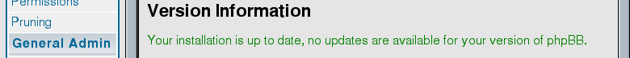
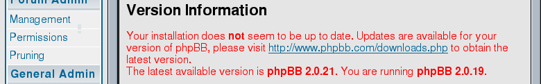
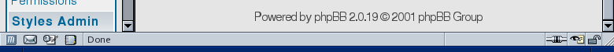

Latest phpBB
You must use the latest version of phpBB. The forum is very popular, therefore crackers concentrate on it and time to time find vulnerabilities.
In short, if your phpBB is out of date, you shouldn't bother about forum spam. Instead, you have to repair your cracked web server.
To learn if your forum is of the latest version, go to the Administration Panel, the page “Admin Index”. Among other information, you get the status.

phpBB is up to date

phpBB is out of date
Sometimes it doesn't work, or you want to know the exact version numbers. Scroll down the page to the bottom and see.

Installed phpBB version is 2.0.19
To get the version number of the latest phpBB, visit its download page.
The latest phpBB version is 2.0.21
There is a low-volume mailing list to announce new phpBB versions. You must subscribe to it.
Next: Preventing bots from registering. What doesn't work
Prev: Introduction
Home: phpBB Antispam HOWTO